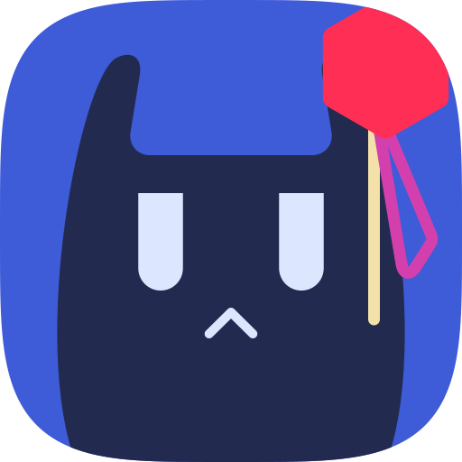

原型 交互原型
不用翻页，直接点着用
一个完整的 Erika 窗口，和第 10 章每一屏用的是同一套代码。首次启动、首页、番剧详情、播放器、迷你播放器和画中画、新番、媒体库、搜索、设置（含可选功能和插件市场）、下载都可以操作。顶部切换 桌面 / 平板 / 手机 / 折叠屏 / 电视，五种设备上功能一样多，只有界面不同；设计语言只列那种设备上真的会出现的。折叠屏可以在 合上 / 展开 / 悬停 之间切换。打开或拖进一个本地视频，会真的播放。你的模块选择会被记住，第一次打开时会先走首次启动。
00 一页摘要
六句话说清楚 Erika
画框
画面是一个画框
看片时画面铺满窗口；一有操作，画面退后一步缩进圆角画框，原生控件围在四周。这个画框贯穿每一屏：空闲时是空画框，首页是舞台，详情里是胶片的一格，返回时缩成迷你播放器。
控件
只设计布局，控件交给系统
本文只规定三件事：东西放在哪、用哪一类控件、多大。控件长什么样由各平台原生绘制（bern）。我们自己画的只有画面、海报、弹幕和少数几块表面，不需要毛玻璃。
功能
三层：核心 / 可选模块 / 插件
第一次打开时，用户自己选要开哪些模块：全开约等于现在的 NipaPlay，全关就是一个干净的播放器。没开的模块随时可以去 设置 › 可选功能 打开。用的人少的小功能用脚本重写，放进插件市场。
设备
五种设备，功能一样多
桌面、平板、手机、折叠屏、电视上每一屏的功能一样多，只有界面不同。设计语言有六种：苹果、鸿蒙、Material 3、Fluent 2、libadwaita、网页，每种设备只出现它上面真的会有的那几种。
动效
布局安静，交互有弹性
排版干净、留白多。一旦操作，按钮像果冻一样回弹，画框在铺满、退后、推开之间弹来弹去。动效只用位置、尺寸、缩放、透明度和圆角裁切，全部是可打断的弹簧，每个平台都能原生做到。
色彩
用得少，但用就用纯色
底色只用中性灰。主题色从三种纯色里选（绯红、群青、荧绿），只给按钮和文字，文字强调一律是下划标注。二次元的味道只留在仪式时刻：欢迎页和插件市场头图的学院格。
怎么读这份文档：第 02 章讲画框这一个核心想法，第 03 章讲设备和设计语言，第 04 – 09 章是规范（功能、导航、尺寸、控件、视觉、动效），第 10 章逐屏讲每个界面。文中的窗口都可以直接点，和顶部的交互原型是同一套代码；主题色出现的位置就是规范允许用主题色的位置。主题色和明暗用右下角的按钮切换。
01 设计原则
八条原则
遇到拿不准的设计决定，按这八条依次判断。
P1
一个画框贯穿始终
画面永远是同一个圆角矩形：空闲、浏览、播放、迷你，变的只是它的位置和大小。设计新界面时先问：画框在哪里？
P2
布局是我们的，控件是系统的
我们决定控件放在哪里、属于哪一类、多大；控件的样子交给系统。这样每个平台上都像本地应用，换到哪种设计语言都成立。
P3
动效只用变换
位置、尺寸、缩放、透明度、圆角裁切，全部是可打断的弹簧。不用模糊，不采样画面，所以每个平台都能原生做到。
P4
常用的放在手边
最常用的操作一次点击就能完成：打开文件、继续观看、开关弹幕、切字幕和音轨、调倍速。次常用的最多两次，其余放进设置。
P5
功能由用户挑，不由我们塞
没开的模块不进导航、不进播放器菜单、不在设置里占一节，也不初始化服务。它只在「可选功能」页出现一次。
P6
五种设备一样多
任何一种设备上新增的功能，其他四种必须同时有入口。设备之间只允许界面不同，不允许功能不同。
P7
颜色像墨水，不像油漆
主题色是滴在纸上的墨，不是刷墙的漆。只给按钮和文字用，每屏最多一个主要按钮，其他地方都是中性色。
P8
新意来自布局
舞台、时间轴、胶片、手风琴、缩放墙、就地展开——每一屏的新意都来自布局，不来自平台独有的材质，也不靠往界面上贴装饰。
02 画框
画面是一个画框
Erika 的核心想法只有一个：画面不是铺在窗口底下的背景，而是一个有圆角的画框。看片时它铺满窗口；一有操作，它退后一步，原生控件围在四周；打开播放设置时，它被推到一边给面板让位。字幕和弹幕在画框里，永远不会被控件挡住。
为什么是画框：bern 在每个平台用原生控件。盖在视频上的毛玻璃只有苹果能原生做到，其他平台要么自己画，要么退化成一块灰。画框不靠材质靠布局：控件在画面外面，换到哪种设计语言都成立。这个方向在 2026-10-12 定稿，替换了之前盖在画面上的胶囊控制条（见附录）。
2.1 画框出现在哪里
同一个画框贯穿整个应用。任何一屏上的画面，都是这一个圆角矩形换了位置和大小，所以在屏和屏之间移动时，眼睛一直跟着同一个东西。
首次启动
预览小窗口
选模块时右边的小窗口实时组装；点「开始使用」，它长成真正的主窗口。
纯粹模式
空画框
还没放画面的画框，和播放器「退后」时一样大、在同一个位置。打开视频时画面直接填进来。
首页
舞台
「继续观看」是一个舞台画框，其他在看的排在旁边。点舞台，画框直接长成播放器。
番剧详情
胶片的一格
剧集是一条胶片，下一集停在正中。点某一集，那一格长成播放器。
播放器
铺满 · 退后 · 推开
同一个矩形在三种状态之间走弹簧，控件跟着淡入淡出。
迷你播放器
缩小的画框
返回时画框缩进侧栏底部；手机是标签栏上方的迷你条，电视是右下角的画中画。
折叠屏
右栏和上半屏
展开时右栏没点开东西，就放「继续观看」的画框；悬停时画框占满上半屏。
可选功能
设置即预览
开关一个模块，旁边的小窗口当场变化，不用关掉设置去找。
跟着画框走一遍：点一张海报打开详情，海报从卡片里长出来；点胶片里的一集，那一格长成播放器；点左上角返回，画框缩进侧栏的迷你播放器；点迷你播放器，它再长回去设计语言和设备跟随第 10 章顶部的开关 恢复
2.2 三种状态
同一个矩形在三种状态之间走 hero 弹簧（位置、宽度、圆角），控制层跟着淡入淡出。纯粹模式的空画框就是「退后」这一档，所以从空闲到播放没有跳动；从缩略图打开时，画框从被点的位置长出来，返回时缩进迷你播放器。
| 状态 | 什么时候 | 桌面 1280×800 | 平板 1180×820 | 手机横屏 844×390 | 电视 1280×720 |
|---|---|---|---|---|---|
| 铺满 | 播放中 3 秒没操作 | 0, 40 · 1280 × 720 | 0, 78 · 1180 × 664 | 75.5, 0 · 693 × 390 | 0, 0 · 1280 × 720 |
| 退后 | 鼠标移动、点一下画面、遥控器按键 | 103, 64 · 1074 × 604 | 60, 76 · 1060 × 596 | 162.5, 48 · 519 × 292 | 200, 52 · 880 × 495 |
| 推开 | 打开播放设置 | 24, 114 · 896 × 504 | 24, 120 · 788 × 443 | 16, 56 · 512 × 288 | 40, 100 · 784 × 441 |
坐标是画框左上角 x, y · 宽 × 高。控制行在画框下面：桌面和平板与画框同宽，打开面板时铺满左右（桌面 24 · 1232，平板 24 · 1132）；电视的控制行横跨整屏（64 · 1152）；手机没有控制行，控件在画框两侧的拇指区。
2.3 画框的规矩
- 圆角跟随设计语言的卡片圆角：苹果 22、鸿蒙 20、Material 28、Fluent 8、libadwaita 12、网页 12。舞台、空画框、迷你播放器用同一个值。
- 字幕和弹幕在画框里，跟着画框一起缩放；控件永远在画框外面，不叠在画面上。
- 进度滑块和画框同宽，两端对齐画框的左右边；手机横屏没有控制行，控件在画框两侧的拇指区。
- 播放器始终是深色，不管当前主题。浅色窗口里，播放器弹出的菜单也跟着变深色。
- 窗口按钮保留：红绿灯、Fluent 的标题栏按钮、GNOME 的关闭按钮在播放器里都还在，跟控件一起淡入淡出。
- 只改几何，不碰像素：画框只做圆角裁切、缩放和位移，不采样画面、不做模糊，所以 DRM 保护的视频也一样。
- 三秒规则：播放中 3 秒没有操作，画框铺满、控件淡出；一动鼠标、点一下画面或按遥控器，它退后、控件回来。
2.4 需要 bern 提供的能力
视频层
能做圆角裁切、缩放和位移，并且和原生控件排在同一个窗口里、同一套层级。
变换与弹簧
任意视图能设置缩放、位移和透明度；可打断的弹簧驱动；跨视图层级的快照，用来做共享元素转场。
联动
按滚动位置或手势变化的效果用声明式联动：界面只声明对应关系（例如离滚动区中心越近越大），由各平台的渲染系统逐帧计算，应用不做逐帧回调。用在胶片放大（T14）；双指缩放海报、上下滑调音量是把手势绑定到一个值。
文字行框
拿到文字排版后的行框，用来在字的底边画下划标注。
电视的焦点引擎和折叠屏的姿态事件也要 bern 支持，见第 13 章。
03 设备与设计语言
五种设备，六种设计语言
bern 的规矩：不同设备功能必须一样，只允许界面不一样。同一份布局在六种设计语言下都要成立；每种设备只出现它上面真的会有的设计语言。
3.1 五种设备
| 设备 | 设计尺寸 | 外壳与导航 | 播放时 | 输入 |
|---|---|---|---|---|
| 桌面 | 1280 × 800 窗口 | 侧栏 232 + 工具栏 56；工具栏里是搜索框和「打开」，侧栏底部是迷你播放器、账号和设置 | 在窗口里播放，可以全屏 | 鼠标、键盘：⌘K 搜索、⌘, 设置、⌘O 打开、空格暂停、Esc 返回；文件可以直接拖进窗口 |
| 平板 | 1180 × 820（横放） | 侧栏 248；Material 是 96 宽的导航轨，「打开」是导航轨顶部的 FAB | 横放即全屏 | 触摸，没有悬停：▶ 常驻在缩略图上 |
| 手机 | 390 × 844 | 底部标签（各个页面 + 搜索），页面逐层推入；导航栏右上角是「＋」打开和头像（设置） | 转成横屏 844 × 390，控件在画框两侧的拇指区 | 触摸；「打开方式 › Erika」对应拖放 |
| 折叠屏 | iPhone Duo：合上 470 × 662，展开 930 × 662 书本式大折叠：合上 390 × 844，展开 740 × 808 | 合上 = 手机；展开 = 左右两栏，折痕在两栏中间；悬停 = 上下两半 | 合上转横屏；展开时画框在屏里；悬停时画面铺满上半屏 | 触摸；换姿态是实时事件，停在同一页，视频接着放 |
| 电视 | 1280 × 720（1920 × 1080 的 1.5 倍） | 顶部焦点标签，第一个是「搜索」；「打开」和设置也在顶栏 | 始终全屏 | 遥控器：方向键、确认、返回、音量、语音 |
设计尺寸是原型里窗口的逻辑尺寸；真实窗口按第 06 章的尺寸档自适应。
3.2 六种设计语言
| 设计语言 | 平台 | 出现在 | 卡片圆角 | 这套设计里的样子 |
|---|---|---|---|---|
| 苹果 · 液态玻璃 | macOS、iPadOS、iOS、tvOS | 五种设备（折叠屏是 iPhone Duo） | 22 | 侧栏是浮起的圆角面板；工具栏用玻璃按钮，主要按钮是突出的玻璃按钮；电视的标签是一条玻璃胶囊 |
| 鸿蒙 | HarmonyOS 电脑、平板、手机、折叠屏 | 桌面、平板、手机、折叠屏（Mate X 一类） | 20 | ArkUI 原生组件：圆形图标按钮、SegmentButton、bindSheet 侧面板 |
| Material 3 | Android（手机、平板、折叠屏、桌面）、Google TV | 五种设备 | 28 | 填充面代替白卡；平板用导航轨和 FAB；电视的焦点是放大加描边 |
| Fluent 2 | Windows（WinUI 3） | 桌面 | 8 | Mica 背景，侧栏透明，设置用 SettingsCard |
| libadwaita | Linux（GNOME） | 桌面 | 12 | HeaderBar，设置用 boxed list，侧面板是 AdwOverlaySplitView |
| 网页 | 浏览器里的 Erika | 桌面、平板、手机、折叠屏 | 12 | 通用的网页组件：Primary / Ghost 按钮、Dropdown、Sheet |
切换设备时，当前的设计语言如果在那种设备上不存在，会自动回到苹果。主题色作为强调色交给每一种设计语言的原生控件。
折叠屏的三种姿态：合上 = 外屏，就是一台手机（iPhone Duo 的外屏是 1.41:1 的护照形，系统栏和标签栏竖排在右侧，返回在最上面，常用操作在下面）。展开 = 左右两栏：左栏是当前页，右栏是点开的那一层，没点开时是「继续观看」的画框；折痕正好落在两栏中间，没有控件跨在折痕上（苹果的指南叫它分隔区域，要求偶数栏）。悬停 = 半开放在桌上：上半屏永远是画框，下半屏是手指能碰的那一半，播放时画面一直铺满上半屏，控件全在下半屏，所以画面不用退后。换姿态时停在同一页、同一层，正在放的视频接着放。
电视的操作方式：没有指针，焦点按空间位置移动，回车 = 点击，返回键逐层退回（菜单 → 播放器 → 弹窗 → 详情 → 首页）。焦点样式跟随设计语言：tvOS 是抬起放大、按钮变白；Google TV 是放大加描边、按钮反色。都只用缩放、阴影和颜色，不需要模糊。
04 功能分层
核心、可选模块、插件
功能本身不变，变的是谁来决定开哪些。现有功能全部重新归到下面三层。
核心
始终存在。只用核心，Erika 就是 VLC / PotPlayer / IINA 那种播放器。
- 打开文件 / 文件夹 / 链接、拖放
- 播放控制、倍速、全屏、画中画
- 音轨、字幕轨、字幕样式
- 同目录连播、续播、最近播放
- 截图、快捷键、HDR
- 外观、语言、插件宿主
可选模块8 个
随安装包内置。首次启动时选择，之后可在 设置 › 可选功能 开关。关闭后不加载、不显示。
插件
不进安装包，用脚本重写，在插件市场按需下载。
- AI 防剧透
- 正则过滤 · 敏感词屏蔽
- CRT 着色器
- GIF / 片段导出
- 外部播放器调用
- 界面音效 · 主题壁纸 · Titan 弹幕
4.1 功能归属表
根据原项目的页面、设置项、播放器菜单和插件目录整理。核心 模块 插件 收敛
| 现有功能 | 新归属 | 说明 |
|---|---|---|
| 本地文件 / 文件夹 / URL 播放、拖放、系统「打开方式」 | 核心 | 纯粹模式的主界面就是这个 |
| 播放控制、倍速、逐帧、全屏、画中画、截图 | 核心 | |
| 音轨、字幕轨（内嵌 / 外挂 ASS、SRT）、字幕样式 | 核心 | 字幕不依赖任何模块 |
| 同目录连播、续播、最近播放、跳过片头（固定秒数） | 核心 | 最近播放只存在本地，云同步放在「账号同步」 |
| 快捷键、外观（明暗、主题色）、语言、本地备份与恢复 | 核心 | |
| HDR / EDR | 核心 | 自动启用，不提供开关 |
| 播放内核 liberika / libmpv / MDK / Video Player | 核心 收敛 | 默认 liberika，libmpv 作为后备放在 设置 › 高级；MDK 和 Video Player 建议退役（见待讨论） |
| 独立播放窗口、开发者选项、日志导出 | 核心 | 放在 设置 › 高级 |
| 大屏模式（实验室） | 核心 | 改成按窗口尺寸自动适配（TV 尺寸档），不再是开关 |
| 弹弹play 自动 / 手动匹配、弹幕渲染与设置、弹幕轨道 / 列表 / 偏移、本地挂载 xml/json | 弹幕 | 播放器的弹幕按钮、浮层、面板分页都属于这个模块 |
| 发送弹幕 | 弹幕 + 账号同步 | 两个模块都开时，播放器里才出现弹幕输入框 |
| 弹幕引擎 Next / Next++ / Next2 / DFM+ / GPU / Canvas / CPU | 弹幕 收敛 | 保留一个默认引擎和一个兼容引擎，其余移除或放进开发者选项 |
| 本地媒体库扫描、番剧识别、海报墙、库管理 | 媒体库 | |
| 主页推荐、今日新番、新番表、番剧详情、Bangumi 评分与短评 | 追番 | 「首页」和「新番」两个页面属于这个模块 |
| 弹弹play 账号、Bangumi 进度同步、观看历史云同步 | 账号同步 | 依赖「追番」 |
| Jellyfin、Emby、WebDAV、SMB | 网络媒体源 | 依赖「媒体库」，显示在 媒体库 › 服务器 里 |
| NipaPlay 局域网共享、Web 远程访问、遥控、中继 | 局域网与远程 | 依赖「媒体库」 |
| Anime4K、ArtCNN 超分 | 画质增强 | 播放器面板「画面」分页里多出超分选项 |
| 种子 / 磁力下载 | 下载 | 也可以改成插件（对接 qBittorrent / aria2），见待讨论 |
| AI 防剧透 | 插件 | 本质是「调用网络接口 + 过滤弹幕」，很适合用脚本实现 |
| 弹幕正则过滤、中文敏感词屏蔽 | 插件 | 现在就是内置 JS 插件，改成市场里的推荐插件 |
| CRT 着色器 | 插件 | 以着色器包的形式分发 |
| GIF 片段导出 | 插件 | 调用宿主提供的 media.export 能力 |
| 外部播放器调用 / 外部播放器控制台 | 插件 | |
| Titan / WebView 弹幕叠加 | 插件 | |
| 界面音效 | 插件 | 以音效包形式提供，和果冻动效搭配使用 |
| 自定义背景图 | 插件 | 和「干净」的方向冲突，移出默认功能，做成主题与壁纸插件 |
4.2 模块依赖
开启一个模块时，它依赖的模块会自动一起开启，并弹出提示「已同时开启：媒体库」。关闭被依赖的模块时，依赖它的模块也会一起关闭，同样有提示，并且可以撤销。
账号同步 → 追番同步的是番剧的进度和评分
网络媒体源 → 媒体库服务器内容显示在媒体库里
局域网与远程 → 媒体库共享的是媒体库
防剧透插件 → 弹幕插件也能声明依赖哪个模块
4.3 模块的工程约定
每个模块（以及每个插件）都要声明自己往哪些扩展点里加东西。界面根据已开启模块的这些声明组装出来，所以「关闭」等于「这些声明不存在」，不需要到处写 if。
// 示意：模块清单（插件使用同一套结构） module "danmaku" { name: "弹幕", icon: "danmaku", depends: [], contributes: { playerHud: ["danmaku.toggle", "danmaku.input"], // 播放器控制行 playerPanel: ["danmaku"], // 设置侧面板的分页 seekbarOverlay: ["danmaku.peaks"], // 进度条上方的弹幕高峰点 settings: ["danmaku"], // 设置侧栏里的一节 shortcuts: ["D: 开关弹幕", "[ / ]: 弹幕偏移"], services: ["dandanplay.match", "danmaku.render"] // 关闭时不初始化 } }
05 信息架构与导航
导航跟着模块长出来
导航只放已开启模块提供的页面；一个页面都没有时就没有导航，窗口本身就是一个空画框。播放器不是一个页面，而是盖在所有页面之上的一层。
纯粹：0 个页面，没有导航，窗口就是空画框
看番：首页、新番、媒体库三个页面
全都要：再加下载，以及插件提供的页面
5.1 页面清单
| 页面 | 出现条件 | 内容 |
|---|---|---|
| 首页 | 追番 | 「继续观看」的舞台和也在看 → 今日更新的时间轴 → 媒体库最近添加 |
| 新番 | 追番 | 手风琴周历：一周七天七根柱子，今天默认展开 |
| 媒体库 | 媒体库 | 分段：本地 / 服务器（网络媒体源）/ 共享（局域网与远程），加「管理」 |
| 下载 | 下载 | 进行中 / 已完成 |
| 插件页面 | 插件提供 | 放在侧栏分隔线下面，最多 3 个，再多就收进「插件」分组 |
| 搜索 | 有任何页面时 | 桌面、平板：工具栏的搜索框，也可以 ⌘K，就地展开成结果面板；手机：最后一个标签；电视：顶栏第一个标签 |
| 设置 | 始终 | 桌面、平板：侧栏底部的齿轮，也可以 ⌘,，弹出设置窗口；手机：导航栏右上角的头像；电视：顶栏；纯粹模式：窗口右上角的齿轮 |
5.2 一直放在手边的东西
打开
桌面工具栏常驻「打开」，也可以 ⌘O 或直接把文件拖进窗口；Material 平板是导航轨顶部的 FAB，手机是导航栏的「＋」，电视在顶栏。纯粹模式下，它就是画框正中的主按钮。
继续观看
首页的舞台就是继续观看，点一下直接播放。正在播放的内容缩成迷你播放器，固定在侧栏底部、手机标签栏上方或电视右下角。
搜索
同时搜番剧、继续播放、设置项和操作，以及插件提供的媒体源。回车直接打开番剧、开始播放或跳到那一节设置。
5.3 播放器是一层，不是一页
状态 A
播放
从舞台、胶片或文件打开时，被点的那一格长成画框，再铺满窗口（T2）。手机先转成横屏。
状态 B
迷你播放器
播放中按返回，画框缩成迷你播放器继续播放，同时可以浏览其他页面（T11）。纯粹模式没有侧栏，画面退回空画框，这个视频排到「最近播放」第一个。
状态 C
画中画 / 独立窗口
使用系统画中画。桌面平台可以把播放器拆成独立窗口（设置 › 高级）。
5.4 返回
返回逐层退回：菜单 → 播放器 → 弹窗 → 详情 → 首页。桌面是工具栏的返回和 Esc，手机是导航栏的返回和系统的返回手势，电视是遥控器的返回键。折叠屏展开时，右栏的详情用「关闭」代替「返回」，左栏的列表不动；设置的目录和子页同时在屏上，返回就是退出设置。
06 布局与尺寸
留白、尺寸档与形状
干净主要靠留白和对齐，不靠分隔线和卡片底色。所有尺寸都是 4 的倍数，写的是设计尺寸（pt / dp），实现时映射到各平台最接近的值。
6.1 间距
| Token | 值 | 用途 |
|---|---|---|
space-1 | 4 | 图标和文字之间、紧凑标签内 |
space-2 | 8 | 同组控件之间 |
space-3 | 12 | 海报和标题之间、列表行内 |
space-4 | 16 | 手机页边距、卡片内边距 |
space-5 | 24 | 海报网格间距、平板页边距 |
space-6 | 32 | 桌面页边距、区块标题上方 |
space-7 | 48 | 区块之间、大屏页边距 |
space-8 | 64 | TV 页边距（含 5% 过扫描安全区） |
6.2 窗口尺寸档
第 03 章的设计尺寸是原型里的典型窗口；真实窗口按宽度落进下面的尺寸档。
| 尺寸档 | 宽度 | 典型设备 | 导航 | 海报列数 | 页边距 |
|---|---|---|---|---|---|
| Compact | < 600 | 手机竖屏、折叠屏外屏 | 底部标签栏 | 3 | 16 |
| Medium | 600 – 1023 | 平板竖放、折叠屏展开、小窗口 | 侧栏，Material 是导航轨；折叠屏展开时分成左右两栏 | 4 – 5 | 24 |
| Expanded | 1024 – 1439 | 笔记本、平板横放 | 侧栏 232 – 248 | 6 – 7 | 32 |
| Large | ≥ 1440 | 台式机大屏 | 侧栏 248 | 7 – 9 | 48 |
| TV | 10 英尺界面 | tvOS、Google TV | 顶部焦点标签 | 6（大海报） | 64 |
桌面最小窗口 720×480。播放器层没有最小宽度，小于 480 时控制行只保留播放、进度和全屏。
6.3 控件尺寸档
尺寸档表达的是意图，实现时映射到各平台最接近的控件尺寸（如 macOS 的 controlSize、libadwaita 的 .pill）。触屏下所有可点击区域不小于 44pt。
标签
S · 26 / 触屏 36
次要按钮
M · 32 / 触屏 44
继续播放
L · 42 / 触屏 50
图标按钮 M · 36
XL · 68 播放
| 档 | 高度 桌面 / 触屏 | 图标 | 用于 |
|---|---|---|---|
| XS | 20 / — | 12 | 角标、计数 |
| S | 26 – 30 / 36 | 16 – 18 | 工具栏图标按钮、播放器控制条图标、表格内操作 |
| M | 32 / 44 | 18 | 标准按钮、搜索框、分段控件、下拉选择 |
| L | 42 / 50 | 18 – 20 | 每屏唯一的主要操作（继续播放、开始使用、打开文件） |
| XL | 68 | 30 | 触屏播放器中央的播放键 |
6.4 内容形状
| 元素 | 比例 | 圆角 | 说明 |
|---|---|---|---|
| 画框、舞台、迷你播放器 | 16 : 9 | 卡片圆角：苹果 22、鸿蒙 20、Material 28、Fluent 8、libadwaita 12、网页 12 | 底边 4px 进度条用主题色 |
| 海报 | 2 : 3 | 海报圆角：苹果 10、鸿蒙 12、Material 12、Fluent 6、libadwaita 8、网页 10 | 静止时没有阴影；悬停放大 1.03 并浮起 |
| 剧集胶片的格子 | 16 : 9 | 大圆角：Fluent 8、libadwaita 和网页 12，其余 16 | 正中那一格放大 1.12，离中心越远越小 |
| 详情页头部 | — | — | 从海报取色铺底，只占头部，渐变到透明；不用模糊 |
| 浮层、菜单、侧面板 | — | 系统默认 | 用各平台自己的浮层材质 |
| 自绘表面（空画框的虚线、拖放区、预设卡片） | — | 卡片圆角 | 只在我们自己绘制的组件上使用 |
6.5 窗口外框
macOS
侧栏是浮起的圆角面板，离窗口边 8；红绿灯在侧栏顶部。播放器里红绿灯保留，跟控件一起淡入淡出。
Windows
Mica 背景，侧栏透明。右上角的标题栏按钮 46 × 32，工具栏避开这块；纯粹模式下给右上角留出 150。
Linux
libadwaita 的 HeaderBar 和分栏，跟随 GNOME 的按钮布局设置；播放器里关闭按钮保留。
鸿蒙电脑
沿用系统的窗口装饰，侧栏和标题栏用 ArkUI 原生组件。
平板、手机、折叠屏
内容延伸到状态栏下面，底部按钮条贴着安全区。iPhone Duo 横拿时，系统栏和工具栏竖排在右侧。
电视
四周留 5% 过扫描安全区（页边距 64），没有窗口按钮。
所有平台：画框铺满时标题栏跟着控件一起淡出，画框退后时一起回来。
07 控件词汇
抽象控件与六种设计语言的原生控件
设计稿里只使用下面这些抽象控件，每个都有对应的原生实现。苹果一列在 macOS、iPadOS、iOS、tvOS 上用同一种写法，平台差异由系统处理。最终以 bern 实际提供的能力为准，这张表是需求清单。
| 抽象控件 | 苹果 | 鸿蒙（ArkUI） | Material 3 | Fluent 2（WinUI 3） | libadwaita | 网页 |
|---|---|---|---|---|---|---|
| 主要按钮 | .borderedProminent · .glassProminent | Button · EMPHASIZED | Filled Button | Button · AccentButtonStyle | GtkButton .suggested-action .pill | Primary 按钮 |
| 次要按钮 | .bordered · .glass | Button · NORMAL | Tonal Button | Button | GtkButton .pill | Secondary 按钮 |
| 图标按钮 | .glass 圆形 · 工具栏按钮 | Button Circle + SymbolGlyph | IconButton | AppBarButton | GtkButton .flat .circular | Ghost 图标按钮 |
| 分体开关按钮 | NSComboButton | Toggle + bindMenu | Split button | ToggleSplitButton | ToggleButton + MenuButton（linked） | Button group |
| 开关 | Toggle .switch | Toggle · Switch | Switch | ToggleSwitch | GtkSwitch · AdwSwitchRow | Switch |
| 滑块 | Slider | Slider · showSteps | Slider（stop indicator） | Slider · TickPlacement | GtkScale · add_mark | range |
| 分段控件 | Picker .segmented | SegmentButton | Segmented button | SelectorBar | AdwToggleGroup | Tabs |
| 下拉按钮 | Menu · Picker .menu | Select · bindMenu | Exposed dropdown menu | DropDownButton · ComboBox | GtkDropDown · AdwComboRow | Dropdown |
| 文本框 | TextField | TextInput | Filled text field | TextBox | GtkEntry | input |
| 搜索框 | .searchable · NSSearchField | Search | SearchBar | AutoSuggestBox | GtkSearchEntry | search input |
| 菜单 | Menu · contextMenu | Menu · bindContextMenu | Menu | MenuFlyout | GtkPopoverMenu | Dropdown menu |
| 浮层 | popover（iPhone 上用 Sheet） | bindPopup | Popup · Bottom sheet | Flyout | GtkPopover | Popover |
| 侧面板 | Inspector · Sheet | SideBarContainer · bindSheet | Side sheet | SplitView | AdwOverlaySplitView | Sheet |
| 模态面板 | Sheet | bindSheet · CustomDialog | Modal bottom sheet · Dialog | ContentDialog | AdwDialog | Dialog |
| 侧栏 / 导航轨 | NavigationSplitView 侧栏 | SideBarContainer | Navigation drawer · Navigation rail | NavigationView | AdwNavigationSplitView | Sidebar |
| 底部标签栏 | TabView | Tabs · BarPosition.End | Navigation bar | — | AdwViewSwitcherBar | Tab bar |
| 电视顶部标签 | TabView（tvOS） | — | Tabs（Google TV） | — | — | — |
| 分组列表行 | List .insetGrouped | List · ListItemGroup | List item | SettingsCard | AdwActionRow · AdwPreferencesGroup | List |
| 步进器 | Stepper | Counter | （自绘） | NumberBox | AdwSpinRow | number input |
| 进度 | ProgressView | Progress | LinearProgressIndicator | ProgressBar · ProgressRing | GtkProgressBar · AdwSpinner | progress |
| 工具栏 | toolbar | Navigation 标题栏 | Top app bar | TitleBar + CommandBar | AdwHeaderBar | Toolbar |
| 轻提示 | （自绘） | promptAction.showToast | Snackbar | InfoBar · TeachingTip | AdwToast | Toast |
7.1 自绘组件
只有下面这些由 Erika 自己绘制，自定义的视觉也只在它们身上出现。它们只用图片、文字、形状和变换这些基本元素，任何平台都能画。
画框
画面的圆角裁切和缩放（铺满 / 退后 / 推开）、空画框的虚线、章节名文字、中央的播放反馈图标。画框四周的按钮、滑块、菜单都是原生控件。
海报与缩略图
海报、舞台、胶片的格子、继续观看缩略图，包括进度条和角标。
弹幕层
由渲染引擎绘制，不属于界面控件。
几块表面
今日时间轴的线和「现在」竖线、下载行的底色进度、插件按钮里的安装进度、仪式时刻的学院格。
分工：原生控件负责自己的像素；我们负责布局、动效、主题色和画框。果冻回弹是加在控件外层容器上的缩放变换，不改控件本身，所以对原生控件同样有效。文字的下划标注也是自绘的：需要拿到文字排版后的行框，在文字下方画胶囊形色块。
08 视觉语言
中性色打底，纯色点缀
8.1 主题色
三种主题色都取自 App 图标，饱和度拉满，不做任何减淡或渐变。点右下角的色块可以看到整份文档切换主题色后的效果。文字强调一律使用下划标注：浅色模式黑字、深色模式白字，胶囊形的主题色底纹压在字的底边，右端比文字多出一小段。
绯红 · 默认
#FF2E55 填充上用白字文字强调：黑字 + 绯红底纹
深色模式：白字 + 绯红底纹
群青
#2A51D4 填充上用白字（6.5:1）文字强调：黑字 + 群青底纹
深色模式：白字 + 群青底纹
荧绿
#07FF94 填充上用黑字（14:1）文字强调：黑字 + 荧绿底纹
深色模式：白字 + 荧绿底纹
下划标注
继续 第 4 集
新番表
媒体库
黑字（深色模式白字），胶囊形主题色底纹压在字的底边，右端多出一小段
荧绿放在白底上做文字几乎看不清（1.3:1）。我们不去把它调暗，而是在浅色模式下改用荧光笔划线的样式：颜色保持纯色，可读性也有保证，看起来还像学生的课本笔记。现在三种主题色都用这个样式：底纹压在字的底边，右端比文字多出一小段；深色模式换成白字，参数不变。
| 属性 | 规格 |
|---|---|
| 文字颜色 | 浅色模式黑色（#111114），深色模式白色（#F4F4F5） |
| 底纹 | 主题色纯色，不透明，胶囊形（两端是半圆） |
| 位置 | 文字盒高度的 74% – 98%，压在字的底边 |
| 长度 | 左端和文字对齐，右端比文字多出 0.4 个字宽（不占排版空间） |
| 用在 | 导航选中项、链接、无边框按钮、「获取」按钮、关键数字、区块编号 |
| 不用在 | 整段正文、标题整行、系统完全接管的控件（底部标签栏、菜单、原生按钮标题），这些交给系统用主题色着色 |
主题色只能用在这些地方
可以
- 主要按钮的填充色，每屏最多一个
- 文字强调：用下划标注标出导航选中项、链接、关键数字（如「第 4 集」），深浅模式都一样
- 开关的开启状态、滑块已填充部分、进度条（通过系统主题色接口设置）
- TV 上的焦点描边
不可以
- 大面积背景、卡片底色、整栏着色
- 批量给图标上色
- 渐变、阴影、分隔线
- 一屏里超过三处，或面积超过 5%（系统控件的开关、滑块状态由系统着色，不计入）
系统语义色（错误、警告、成功）使用系统默认值，并且始终配合图标出现，避免和绯红主题色混淆。弹幕的颜色属于内容，不受这些规则限制。
中性色
bg
#F7F7F8
#F7F7F8
surface
#FFFFFF
#FFFFFF
surface-2
#F0F0F2
#F0F0F2
text-3
#9C9CA5
#9C9CA5
text-2
#5F5F68
#5F5F68
text
#111114
#111114
bg
#0E0E11
#0E0E11
surface
#17171B
#17171B
surface-2
#1F1F24
#1F1F24
text-3
#6B6B74
#6B6B74
text-2
#A6A6AF
#A6A6AF
text
#F4F4F5
#F4F4F5
平台有原生材质时（macOS 侧栏半透明、Windows Mica、libadwaita 侧栏色）优先用原生材质，上面的色值只是兜底。播放器不管当前主题，始终用深色。
8.2 字体
只用系统字体：SF Pro / 苹方、HarmonyOS Sans、Segoe UI Variable / 微软雅黑、Cantarell / Noto Sans CJK、Roboto / Noto。层级靠字号和字重区分，不靠颜色。
| 样式 | 桌面 / 触屏 | 字重 | 用于 | 示例 |
|---|---|---|---|---|
| Large Title | 30 / 34 | Heavy 800 | 页面标题 | 首页 |
| Title 1 | 26 / 28 | Heavy 800 | 详情页标题、引导页标题 | 葬送的芙莉莲 第二季 |
| Title 2 | 17 / 20 | Bold 700 | 区块标题 | 继续观看 |
| Body | 13–14 / 16–17 | Regular | 正文、列表 | 第 3 集 · 剩 9 分钟 |
| Caption | 11–12 / 12–13 | Medium | 角标、辅助信息 | TV 动画 · 2026 年 1 月 |
| Time | 12.5 等宽数字 | Semibold | 时间码 | 09:12 / 24:15 |
实现时映射到各平台的文字样式：NSFont.TextStyle 和 iOS Dynamic Type、鸿蒙的字体规格、WinUI Type Ramp、GTK 的 .title-1…4 / .heading / .caption、Material 3 Type Scale。
8.3 图标
使用各平台的系统符号：SF Symbols、HarmonyOS Symbol、Material Symbols Rounded、Segoe Fluent Icons、Adwaita 图标，通过语义 token 映射，原项目的 PlayerMenuIconToken 可以直接沿用。线宽用常规粗细，选中状态换成填充版。尺寸只有 16 / 18 / 20 / 24 / 30 这几档。
8.4 二次元：只在仪式时刻
浏览和播放时界面里没有纹理和装饰。二次元的味道只留在少数「仪式时刻」：首次启动的欢迎页、插件市场的头图、关于页，用的是学院格。不放看板娘，也不往控件上贴图。
学院格 Academy Tartan
海军蓝底，主题色和白色交织，灵感来自 JK 制服的格纹。跟随主题色和明暗变化，同一屏只出现一次，不和海报放在同一层。
字标
ERIKA エリカ，绀青。出现在欢迎页、关于页和这份文档的封面，入场时字母依次升起。
App 图标
蓝发齐刘海的猫耳女孩：蓝色圆是头发，深色剪影是脸，也是一只猫；右耳歪戴一顶绯红小帽，帽下垂着米黄和品红两根发带。和 Bern 的图标是一对（Bern 是黑猫和蓝发女孩，Erika 是她的棋子）。对外展示用这个圆形主 logo，帽子超出圆；作者亲自设计。入场时猫头从底下蹦出来，眼睛弹开，帽子转着落在耳朵上，最后眨一下眼。出场之后双击 logo，会随机做一个小动作：wink、像猫一样被摸头、绘梨花的招牌坏笑。关于页里的 logo 照这个做。详见 Erika 图标。

各平台与单色
macOS 放进连续圆角底板；安卓按各家桌面的形状裁切，主题图标用单色层；单色版（纯黑、纯白、无背景）保留圆的轮廓环，把眼睛、嘴和竖发绳挖空，用于水印、托盘和印刷。所有格式由 brand/erika-icon-export/build.py 生成。
// 学院格的经纬排列（sett），单位 px，经纬两个方向相同，再叠加 45° 斜纹；运行时用程序生成，不打包位图
academy-tartan: navy 22 · band(black 30%) 34 · 6 · line(accent 92%) 3 · 6 · band 34 · 15 · line(white 50%) 1.5 · 16.5
09 动效
布局安静，交互有弹性
动效只用五种所有平台都能原生做到的变换：位置、尺寸、缩放、透明度、圆角裁切。全部用弹簧参数定义：可以被打断，被打断时从当前速度接着走。
9.1 原则
有来处
每个动画都要能回答「从哪来、到哪去」。打开详情时，海报从被点的卡片里长出来；开始播放时，被点的那一格长成画框。
马上响应
按下后 100ms 内必须有视觉反馈。按下收缩用最快的 press 参数。
可以打断
弹簧接受新的目标值，从当前位置和速度继续，不会跳变。画框铺满到一半又动了鼠标，它直接掉头退回去。
尊重系统设置
系统开启「减少动态效果」后，所有弹簧换成 150ms 淡入淡出，没有回弹也没有位移；联动的缩放也停下，每一格保持原大。
9.2 弹簧参数
统一用周期 T（无阻尼振荡周期，秒）和阻尼比 ζ 描述。换算公式（质量取 1）：stiffness = (2π / T)²，damping = 4πζ / T。
| Token | T | ζ | 手感 | 用于 |
|---|---|---|---|---|
press | 0.12 | 1.00 | 瞬间、没有回弹 | 按下时收缩 |
jelly | 0.42 | 0.42 | 明显的果冻回弹 | 松手回弹、元素弹出、导航项增删 |
bouncy | 0.50 | 0.62 | 轻微回弹 | 浮层、侧面板、轻提示 |
hero | 0.48 | 0.86 | 几乎不回弹，落点有一点弹性 | 共享元素转场 |
smooth | 0.45 | 1.00 | 平滑，没有回弹 | 页面切换、布局重排 |
snappy | 0.22 | 0.85 | 干脆 | 悬停、选中指示器移动 |
平台对应：SwiftUI .spring(response: T, dampingFraction: ζ)；Core Animation CASpringAnimation；Android SpringForce；WinUI SpringScalarNaturalMotionAnimation（Period = T）；libadwaita AdwSpringParams。实验台里会实时算出各平台的参数。
9.3 实验台
改动下面的参数会对整份文档生效，所有按钮都是真的弹簧。可以在这里把手感调到满意，再把数值写回上面的表格。
恢复默认
图标按钮 S · 按下 0.84
收藏次要按钮 M · 按下 0.94
继续播放主要按钮 L · 挤压回弹
海报 · 悬停 1.03 / 按下 0.97
开关 · 外层容器回弹
添加标签
元素弹出 / 移除中央播放反馈 · 点击
剧集简介评论
选中指示器 · snappy9.4 交互反馈表
| 元素 | 悬停（桌面） | 按下 | 松手 |
|---|---|---|---|
| 图标按钮 S | 放大到 1.08 + 8% 底色（snappy） | 0.84（press） | 回到 1（jelly） |
| 标准按钮 M | 1.03 | 0.94 | jelly |
| 主要按钮 L | 1.03 | 横向 0.97、纵向 0.90，有挤压感 | 横纵两个方向用略有差异的弹簧回弹，产生果冻抖动 |
| 海报卡片 | 1.03 + 浮起阴影 | 0.97 | 进入共享元素转场 |
| 开关 | — | 外层容器 0.90 | jelly，同时系统开关播放自己的动画 |
| 导航项 | 出现底色 | 0.94 | jelly；选中指示器以 snappy 滑到新位置 |
| TV 焦点 | 获得焦点时放大到 1.08 并出现阴影（bouncy），失去焦点时回到 1（smooth） | ||
9.5 转场目录
第 10 章每一屏的动效都在这里有编号。全部只用变换；「联动」表示没有弹簧，界面只声明效果和滚动位置的对应关系，由各平台的渲染系统逐帧计算（SwiftUI 的 scrollTransition、Compose 的 graphicsLayer、WinUI 的合成表达式动画、GTK 的帧时钟、网页的滚动驱动动画），应用不做逐帧回调。
| 编号 | 场景 | 做法 | 弹簧 |
|---|---|---|---|
| T1 | 海报 → 详情 | 海报从被点的卡片里长出来，头部的取色铺底淡入，其余内容依次淡入（间隔 30ms） | hero / smooth |
| T2 | 舞台 / 胶片 / 继续观看 → 播放器 | 被点的那一格长成画框，再铺满窗口；手机先转成横屏 | hero |
| T3 | 换页 | 新页面淡入并上移 12px，选中指示器滑过去 | smooth / snappy |
| T4 | 播放设置面板 | 面板从右侧滑入占右栏，画框同时缩小、移到左边（推开），面板内容依次出现 | hero / bouncy |
| T5 | 浮层 / 菜单 | 以触发按钮为原点，从 0.9 放大到 1 | bouncy |
| T6 | 模块增删 | 导航项从 0.4 弹出，其他项平滑让位 | jelly / smooth |
| T7 | 引导完成 → 主窗口 | 预览小窗口的位置、尺寸、圆角一起变成真正的主窗口 | hero |
| T8 | 轻提示 | 从底部弹入，3 秒后下沉淡出 | bouncy |
| T9 | 中央播放反馈 | 图标从 0.6 弹到 1，停留 400ms 后淡出 | jelly |
| T10 | 画框退后 / 铺满 | 一有操作，画面从铺满缩进圆角画框，控件在四周淡入；3 秒没操作再铺满，控件淡出。字幕和弹幕在画框里，跟着一起缩放 | hero |
| T11 | 画框 ↔ 迷你播放器 | 返回时画框缩进侧栏底部（手机是标签栏上方的迷你条，电视是右下角画中画）；点它从原处长回去 | hero |
| T12 | 舞台换位 | 「也在看」的缩略图和舞台交叉飞行，互换位置 | hero |
| T13 | 今日时间轴进场 | 轴线展开，海报依次落下，「现在」竖线最后弹出 | smooth / jelly / bouncy |
| T14 | 胶片放大 | 按离滚动区中心的距离缩放，越近越大，像放大镜扫过；松手后对齐，下一集停在正中 | 联动 |
| T15 | 手风琴周历 | 柱宽走弹簧，展开后列表依次进场；手机上改成竖向，行高走弹簧 | bouncy |
| T16 | 缩放墙重排 | 每张海报的 x / y / 宽都是弹簧（FLIP），被筛掉的缩小淡出，留下的滑过去补位 | smooth |
| T17 | 搜索框就地展开 | 搜索框变形成结果面板（位置、尺寸、圆角）；高度跟着结果伸缩；选中框滑动 | hero / bouncy / snappy |
| T18 | 按钮就是进度 | 按钮里一层宽度动画，装好变成「打开」并晃一下 | jelly |
| T19 | 下载完成 | 行的底色涨满后，行高收起，移到「已完成」 | smooth |
| T20 | 折叠屏换姿态 | 停在同一页、同一层；外框像书页一样翻开或合上，进出悬停时转 90°，视频接着放 | hero |
10 关键界面
逐屏设计
每一屏都有一个自己的布局想法，但共用同一根线索：画面是画框。首页的舞台是画框，点进详情是画框在长大，开始播放是画框铺满窗口，返回时画框缩进侧栏。
下面每一屏都是可以直接点的窗口（和顶部的交互原型是同一套代码），后面附上这一屏的原创点、常用功能、动效、设计语言和审查记录。用下面的开关切换设计语言、设备、折叠屏姿态和功能预设，明暗跟随文档。每一屏都在五种设备 × 各自的设计语言 × 浅色 / 深色下点过。
10.1 首次启动 · 小窗口长成真窗口
引导一共四步，大部分人在第二步选个预设就可以一路「继续」到底：开始 → 选「看番」→ 继续 → 开始使用，四次点击。选起点、开关模块时，右边的小窗口实时组装（主题色和明暗也能在这里改）；点「开始使用」，这扇小窗口长成你的 Erika。
欢迎Logo、学院格
选起点 · 微调纯粹 / 看番 / 全都要 / 自己挑，下面是全部模块的开关
外观主题色、明暗
完成小窗口长成主窗口
桌面是 960×600 的弹窗，不随主窗口缩放；平板是居中的表单弹窗；手机和电视全屏，手机的预览移到卡片上方，底部按钮条贴着安全区。弹窗 hero 弹出，导航项 jelly 进场；完成时一个矩形的位置、尺寸、圆角走 hero 弹簧 重新开始
四个预设
| 预设 | 开启的模块 | 结果 |
|---|---|---|
| 纯粹播放 | 无 | 没有导航，窗口本身就是播放器。空闲时显示「打开」区域和最近播放 |
| 看番 | 弹幕、媒体库、追番 | 首页、新番、媒体库三个页面，播放器带弹幕。这是推荐的默认选项 |
| 全都要 | 全部 8 个 | 和现在的 NipaPlay 基本一致 |
| 自己挑 | 保留当前勾选 | 直接进入微调 |
交互细节
- 「跳过」按纯粹播放处理（见第 13 章）。从旧版 NipaPlay 迁移过来的用户，根据旧配置自动预选「全都要」或者和使用情况最接近的组合。
- 依赖处理：开启「网络媒体源」会顺带开启「媒体库」，底部弹出提示，被顺带开启的那一行做一次 jelly 回弹，让用户看到变化发生在哪里。
- 六步并成四步：「微调」并进第二步（预设卡片下面是全部模块的开关芯片，点了自动切到「自己挑」，带依赖处理）；原来的「按需设置」不在引导里问了，见第 13 章。
- 完成时，右侧预览的小窗口长成真实的主窗口（共享元素转场），主窗口按刚才的选择重新组装，侧栏只出现选中的页面。
原创点
- 预览小窗口是整个引导的主角，选「纯粹 / 看番 / 全都要」时导航项当场弹进弹出。
- 完成时不是关掉弹窗，而是小窗口长成主窗口（共享元素）。
常用功能
- 多数人：开始 → 选「看番」→ 继续 → 开始使用，四次点击。
- 「跳过」= 纯粹播放，之后随时能在设置里改。
动效（都能做到）
- 弹窗 hero 弹出；导航项 jelly 进场；预览 wobble。
- 完成：一个矩形的位置、尺寸、圆角走 hero 弹簧。
设计语言
- 预设卡片、分段、色块、按钮都是原生控件。
- 学院格只在欢迎页出现（仪式时刻）。
审查记录
- 发现：「推荐」标签被一条过宽的选择器挤到单独一行，底纹贯穿整张卡片；选中卡片的对勾看不见。→ 收窄选择器，已修。
- 发现：桌面上预设卡片下面空着一大块，原来的「微调」一步也没了。→ 卡片下面加了全部模块的开关芯片（带依赖处理），点了自动切到「自己挑」。
- 检查：完成时小窗口长成主窗口，主窗口按选择重新组装，侧栏只出现选中的页面。
- 检查：手机上同样四步，预览移到卡片上方。
- 检查：平板是居中的表单弹窗，电视全屏；电视上默认焦点在「开始」，一路回车就能走完四步。
10.2 纯粹模式 · 空画框
所有模块都关掉时，窗口就是一个还没放画面的画框，体验接近 IINA、VLC、PotPlayer。空画框和播放器退后时的画框一样大、在同一个位置，所以打开视频时画面直接填进来，控件出现在四周，没有任何跳动。画框正中是「打开文件」，旁边是打开文件夹和打开链接；最近播放排在画框下面，正好是播放器控制行的位置。
空画框 = 播放器「退后」那一档的画框：桌面 103, 64 · 1074 × 604；平板 60, 76 · 1060 × 596；电视 200, 52 · 880 × 495。拖进来时描边变主题色并 jelly 晃一下手边：打开文件、最近播放、「继续上次」（桌面另有空格键）、直接拖进窗口 恢复
原创点
- 空闲窗口 = 播放器的「无画面」状态，同一个画框贯穿空闲和播放。
- 最近播放放在画框下面，正好是播放器控制行的位置。
常用功能
- 「打开文件」在画框正中，1 次。
- 最近播放 1 次；空格继续上次；直接把文件拖进窗口（原型里可以拖真视频）。
动效（都能做到）
- 拖进来时画框描边变主题色并 jelly 晃一下。
- 打开：画面淡入画框 → 控件淡入四周 → 3 秒后画框铺满窗口。
设计语言
- 画框只是圆角矩形 + 虚线，圆角跟随外观的卡片圆角。
- 按钮、最近播放都是原生控件。
审查记录
- 发现：纯粹模式没有侧栏，播放器里点「返回」之后迷你播放器无处可放，视频就找不回来了。→ 改成画面退回空画框，这个视频排到「最近播放」第一个。
- 检查：从最近播放打开时，播放器画框和空画框的坐标完全一致（103, 64 · 1074 × 604），没有跳动。
- 检查：Fluent 的窗口按钮在纯粹模式下会挡住工具栏，只在这时给右上角留出 150px。
- 发现：手机少了「打开文件夹」和「继续上次」，也没有对应「拖进窗口」的入口。→ 都补上，拖放对应系统的「打开方式 › Erika」；「继续上次」在每台设备上都是一个按钮（桌面另有空格键）。
- 检查：平板和电视的空画框和各自播放器退后时的画框完全重合（平板 60, 76 · 1060 × 596，电视 200, 52 · 880 × 495）。
10.3 首页 · 舞台 + 今日时间轴
「继续观看」是一个舞台画框，其他在看的排在旁边，点一下互换上台；▶ 直接播放另一部（桌面悬停出现，平板和手机常驻在缩略图上，电视在那一行按 ←）。今天的新番挂在一条时间轴上，「现在」是一根主题色竖线：左边已更新，右边今晚稍后。不用轮播，也不用一排同样大的卡片。
换位：两张图交叉飞行（hero）；时间轴进场：轴线展开、海报依次落下（jelly）、「现在」竖线弹出。点舞台，画框直接长成播放器主题色：「继续播放」、进度、「现在」竖线 恢复
原创点
- 舞台 + 换位：不用轮播，也不用一排同样大的卡片。
- 今日更新按播出时间排在时间轴上，而不是网格。
常用功能
- 继续看：点舞台或「继续播放」，1 次。
- 换一部继续：悬停「也在看」那一行，点 ▶，1 次。
- 今天的新番：时间轴上直接点海报。
动效（都能做到）
- 换位：两张图交叉飞行（hero 弹簧）。
- 时间轴进场：轴线展开、海报依次落下（jelly）、「现在」竖线弹出。
- 点舞台：画框直接长成播放器。
设计语言
- 舞台圆角 = 外观的卡片圆角；时间轴只有线和文字。
- 「现在」用下划标注强调。
审查记录
- 发现：「也在看」只有换位，继续另一部要点两次。→ 每一行悬停时缩略图上出现 ▶，直接播放仍然只要 1 次。
- 发现：「现在 22:40」标签压在 23:30 的海报上。→ 海报整体下移 24px，标签放到海报上方。
- 检查：换位动画结束后整页重排，滚动位置保留。
- 发现：手机首页没有「详情」「打开」，「也在看」只能直接播放、不能换上舞台。→ 舞台下加「详情」，导航栏加「＋」打开文件；卡片点一下换上舞台，卡片右下角的 ▶ 直接播放。
- 检查：平板没有悬停，▶ 常驻在缩略图右下角；电视上在那一行按 ← 就到 ▶。
10.4 番剧详情 · 胶片条
详情是页面内推入，不是弹窗。海报从被点的卡片里长出来；头部铺一层从海报取出的颜色（取色，不用模糊）。剧集是一条胶片，下一集停在正中并放大，越靠近中间的格子越大。主要按钮只有一个，总是指向「下一集该看什么」（没看过的番写「开始」）。追番状态、评分是原生下拉，「更多」里是匹配弹幕、在文件夹中显示、刷新、移除。
胶片放大是声明式联动：按离中心的距离缩放。桌面两侧有翻页按钮，平板和手机用手指滑，电视左右键走、焦点那一格停在正中。点某一集，那一格长成播放器简介 / 评论 / 制作 / 文件 是原生分段控件 恢复
原创点
- 胶片条：下一集在正中、离中心越近越大，滚动时像放大镜扫过。
- 海报取色铺底，不依赖模糊。
常用功能
- 「继续 第 n 话」和胶片正中那一格，都是 1 次。
- 追番状态、评分是原生下拉，1 次打开。
动效（都能做到）
- 海报共享元素（hero）。
- 胶片放大：声明式联动，按离中心的距离缩放，由平台逐帧计算。
- 点某一集：那一格长成播放器。
设计语言
- 标签页是原生分段控件；按钮、下拉原生。
- 取色铺底在浅色和深色下都只占头部。
审查记录
- 发现：取色铺底在 Fluent 的抬升内容层上有一道接缝（渐变终点是窗口底色，而不是透明）。→ 改成渐变到透明。
- 发现：还没看过的番，胶片正中也写「继续」并带进度条。→ 改成「开始」，不显示进度。
- 发现：正中放大的那一格压到左右邻居。→ 间距 16 → 30，放大 1.14 → 1.12。
10.5 播放器 · 画框
看片时画面铺满窗口；一动鼠标（触屏上点一下画面，电视上按任意键），画面退后一步缩进一个圆角画框，原生控件围在画框四周。字幕和弹幕都在画框里面，永远不会被控件挡住，也不需要在视频上叠毛玻璃。打开播放设置时，画框被推到左边，面板占右栏。3 秒没操作，画框重新铺满。三种状态的坐标和画框的规矩见第 02 章。
画框：圆角跟随外观的卡片圆角。浅色窗口里播放器仍是深色，弹出菜单也跟着变深色；红绿灯、Fluent 标题栏按钮、GNOME 关闭按钮在播放器里都保留主题色：主要按钮、进度、弹幕开着的状态 恢复
控件：抽象控件，各平台原生绘制
| 抽象控件 | 用在 | 位置 |
|---|---|---|
| 主要按钮 | 播放 / 暂停 | 控制行正中；手机在右栏 |
| 图标按钮 | 上一集、快退 10 秒、快进 10 秒、下一集；顶栏的返回、弹幕匹配、画中画、播放设置、更多（桌面另有音量、全屏） | 主要按钮两侧；顶栏 |
| 分体开关按钮 | 弹幕：左边开关，右边展开常用参数 | 控制行左侧；手机在左栏 |
| 文本框 | 发弹幕 | 桌面、平板在控制行里；手机、电视是「发弹幕」按钮，点了在进度条的位置换出输入条 |
| 下拉按钮 | 字幕与音轨、倍速、画质增强 | 控制行右侧；手机在右栏（画质增强在顶栏） |
| 滑块 | 进度（章节做成刻度，下面写章节名，标出弹幕高峰）、音量、弹幕参数 | 和画框同宽 |
| 菜单 | 字幕、倍速、更多（截图、跳过片头、选集、播放信息、手动匹配弹幕；触屏设备还有锁定方向） | 从按钮弹出 |
| 侧面板 | 播放设置：弹幕、字幕、画面、音频、播放 | 右栏，把画框推开 |
我们自己画的只有三样：画面的圆角裁切和缩放（视频渲染器本来就会做）、章节名文字、中央的播放反馈图标。主题色作为各平台的强调色传给原生控件。
五种设备：功能一样，界面不一样
bern 的规矩：不同设备功能必须一样，只允许界面不一样。下表是播放器的功能对照，任何一种设备新增功能，其他四种必须同时有入口。折叠屏合上时和手机横屏是同一套，下表的折叠屏一列写的是展开和悬停。
| 功能 | 桌面 | 平板 | 手机（横屏） | 折叠屏（展开 / 悬停） | 电视 |
|---|---|---|---|---|---|
| 播放 / 暂停 | 主要按钮、空格、单击画面 | 主要按钮 | 右栏的主要按钮、双击画面 | 主要按钮、双击画面 | 确认键 |
| 快退快进 · 上下集 | 主要按钮两侧 | 同桌面 | 快退和上一集在左栏，快进和下一集在右栏 | 主要按钮两侧（控制行第一行） | 控制行里的按钮；控制层藏着时左右键直接快退快进 10 秒 |
| 进度、章节、弹幕高峰 | 滑块和画框同宽，章节是刻度和下方的文字，拖动显示时间 | 同桌面，控制行在章节名下面 | 底部滑块，章节是刻度；弹幕高峰是轨道上的主题色小点，章节名在拖动提示里 | 展开同平板；悬停时进度行在下半屏，时间放在两端 | 焦点停在进度条上时左右键 ±10 秒 |
| 弹幕开关 · 常用参数 | 分体按钮 | 同桌面 | 左栏同一个分体按钮 | 控制行第二行左侧的分体按钮 | 同一个分体按钮 |
| 发弹幕 | 控制行里的文本框 | 同桌面，弹出键盘 | 「发弹幕」→ 底部换成文本框 | 「发弹幕」→ 进度行换成文本框 | 「发弹幕」→ 遥控器语音或手机输入 |
| 字幕与音轨 · 倍速 · 画质 | 控制行右侧的下拉按钮 | 同桌面 | 右栏的下拉按钮；画质在顶栏 | 控制行第二行右侧的下拉按钮 | 控制行右侧的下拉按钮 |
| 音量 | 顶栏音量键（菜单里有滑块）· 设置 › 音频 | 系统音量键 · 设置 › 音频 | 实体按键、右半边上下滑 · 设置 › 音频 | 实体按键 · 设置 › 音频 | 遥控器音量键 · 设置 › 音频 |
| 选集 · 截图 · 跳过片头 · 播放信息 · 手动匹配弹幕 | 五种设备都在顶栏「更多」里 | ||||
| 完整设置 | 顶栏「播放设置」→ 右栏面板，画框往左让（悬停时面板盖住下半屏，画面不动） | ||||
| 画中画 · 全屏 | 顶栏画中画、全屏 | 画中画；横放即全屏，「更多 › 锁定方向」 | 画中画；横屏即全屏，「更多 › 锁定横屏」 | 画中画；「更多 › 锁定方向」；合上时横屏即全屏 | 画中画；始终全屏 |
| 返回 · 迷你播放器 | 顶栏返回、Esc → 侧栏底部 | 顶栏返回 → 侧栏底部（Material 导航轨放不下，浮在右下角） | 顶栏返回 → 标签栏上方的迷你条 | 顶栏返回 → 左栏底部的迷你条 | 返回键 → 右下角画中画 |
| 显示控制层 | 鼠标移动，3 秒后隐藏 | 点一下画面 | 点一下画面 | 点一下画面；悬停时控件一直留在下半屏 | 任意键 |
原创点
- 画面退后一步，控件在画框外面。
- 手机横屏：两侧拇指区。
常用功能
- 播放、快进退、弹幕开关、发弹幕、字幕、倍速都在一行。
- 弹幕参数在分体按钮的右半边。
动效（都能做到）
- 画框 hero 弹簧；控件淡入；返回时缩进迷你播放器。
设计语言
- 控件对照见第 07 章；六种设计语言下的播放器并排对照在附录的 播放器 · 画框。
审查记录
- 检查：桌面和手机都从被点的位置打开（手机先转横屏）；返回时缩进侧栏迷你播放器或标签栏上方的迷你条。
- 检查：浅色窗口里播放器仍是深色，弹出菜单也跟着变深色。
- 检查：红绿灯、Fluent 标题栏按钮、GNOME 关闭按钮在播放器里都保留。
- 发现：手机进度条下面没有弹幕高峰。→ 改成轨道上的主题色小点，章节名在拖动提示里显示。
- 检查：平板横放即全屏，画框按 1180 × 820 重排，控制行放在章节名下面；电视画框缩小一圈，控制行横跨整屏，控制层藏着时遥控器左右键直接快退快进，发弹幕是按钮（遥控器语音或手机输入）。
10.6 新番 · 手风琴周历
一周七天是七根柱子：选中的那天展开成列表，其余六天收成一列小海报，每张下面写播出时间，放不下的显示「+n」，一眼看出每天有几部。今天默认展开，并标出「明天」「后天」。点行进详情，详情里一键追番。
柱宽 bouncy 弹簧，展开后列表依次进场。手机上同一套手风琴改成竖向，行高走弹簧；电视上焦点移到哪天，回车展开柱子是原生卡片 / 填充面，行是原生列表行 恢复
原创点
- 全周概览和单日详情在同一屏，不用切页、不用横向滚动。
- 收起的柱子是一摞叠起来的海报。
常用功能
- 今天默认展开；看别的日子点 1 次。
- 点行进详情，详情里一键追番。
动效（都能做到）
- 柱宽 bouncy 弹簧；展开后列表依次进场。
- 手机上同一套手风琴改成竖向，高度走弹簧。
设计语言
- 柱子是原生卡片 / 填充面，行是原生列表行。
审查记录
- 改进：加了「明天」「后天」，扫一眼就知道离今天多远。
- 检查：Material 浅色下展开的柱子用填充面，不用白卡，和 M3 的表面规则一致。
- 检查：手机上改成竖向手风琴，行高走弹簧。
- 发现：收起的柱子把海报一张压一张叠起来，封面都看不清。→ 改成一列互不重叠的小海报，每张下面写播出时间，放不下的显示「+n」（桌面、平板 4 张，电视 3 张）；手机竖向手风琴里的小海报也不再叠放。
10.7 媒体库 · 缩放墙 + 拼音索引
现在的「本地媒体库 / 本地库管理 / 共享媒体库 / 共享库管理 / 添加媒体服务器」五个标签，合并成「本地 / 服务器 / 共享」分段加一个「管理」按钮；分段随模块变化，没开网络媒体源就没有「服务器」。一个滑块管海报大小（⌘± 或双指），小库看画廊，大库看目录，每张海报沿弹簧滑到新位置。右边一条拼音索引，点字母直接滚过去，那张海报晃一下。筛选和排序也是海报自己挪位。
每张海报的 x / y / 宽是弹簧（FLIP 重排），被筛掉的缩小淡出，留下的滑过去补位；缩到目录模式时标题自动隐藏。电视上焦点停在滑块时，左右键调大小滑块、分段、芯片、下拉都是原生控件 恢复
原创点
- 一个滑块管海报大小，小库看画廊，大库看目录。
- 拼音索引条（像通讯录），点了那张海报会晃一下。
常用功能
- 打开：点海报。
- 找：索引条或 ⌘K；筛选：芯片 1 次；排序：原生下拉。
动效（都能做到）
- 每张海报的 x / y / 宽是弹簧（FLIP 重排）。
- 被筛掉的缩小淡出，留下的滑过去补位。
设计语言
- 滑块、分段、芯片、下拉都是原生控件。
审查记录
- 发现：手机默认只有两列，海报太大。→ 手机的海报尺寸范围改成 64–150，默认三列。
- 发现：缩放滑块的手柄压到左边的小图标。→ 左右各留 8px。
- 检查：缩到目录模式时标题自动隐藏；筛选、排序、切换「本地 / 服务器 / 共享」都是海报自己滑到新位置。
- 发现：手机没有「管理」。→ 导航栏加文件夹按钮。电视上焦点停在海报大小滑块时，左右键调大小。
10.8 搜索 · 搜索框就地展开
桌面和平板上，⌘K 或点搜索框，搜索框自己长成结果面板（同一个物体），关掉时缩回去。结果按番剧、继续播放、设置、操作分组，番剧结果直接给海报；↑↓ 时选中框滑过去，回车打开番剧、开始播放或跳到设置那一节。手机上是「搜索」标签页，电视上是顶栏第一个标签（左边屏幕键盘，右边结果，也接遥控器语音），结果都一样。
面板的位置、尺寸、圆角走 hero 弹簧，高度跟着结果走，打字时用 bouncy 弹簧伸缩；选中框 snappy 弹簧滑动面板用各平台的浮层材质，输入框原生 恢复
原创点
- 面板不是凭空出现，而是搜索框变形出来的。
- 番剧结果直接给海报，一眼认出。
常用功能
- ⌘K → 输入 → 回车；↑↓ 选择。
- 设置项也能搜，回车直接打开那一节。
动效（都能做到）
- 面板的位置、尺寸、圆角走 hero 弹簧。
- 选中框 snappy 弹簧滑动。
设计语言
- 面板用各平台浮层材质，输入框原生。
- 手机上是「搜索」标签页。
审查记录
- 发现：结果只有两三条时面板仍然 480px 高，下面空一大块。→ 面板高度跟着结果走，打字时用 bouncy 弹簧伸缩。
- 检查：↑↓ 时选中框滑动，回车打开番剧、开始播放或跳到设置那一节。
- 检查：手机上是「搜索」标签页，结果和桌面一样。
- 检查：电视上搜索是顶栏第一个标签：左边屏幕键盘（拼音首字母、空格、删除、清空），右边结果，也接遥控器语音。
10.9 设置 · 可选功能 · 设置即预览
可选功能旁边是一扇实时变化的小窗口：开关一个模块，导航项弹进弹出，播放器条多出弹幕按钮；被连带开启或关闭的那一行闪一下，并弹出提示。没开的模块在侧栏和设置目录里都不占位置（P5）。三个预设一键切换；设置首页有账号和「搜索设置」，设置项也能从 ⌘K 搜到。
桌面和平板是从齿轮弹出的设置窗口（bouncy），手机是逐级推入的列表，电视全屏。libadwaita 是 boxed list，Fluent 是 SettingsCard，苹果是分组列表，Material 是填充面列表列表图标用中性灰底，不用主题色 恢复
原创点
- 开关的结果当场看得见，不用关掉设置去找。
- 三个预设一键切换。
常用功能
- 外观、播放、弹幕在侧栏前三项。
- 搜索设置在侧栏顶部，也接入 ⌘K。
动效（都能做到）
- 设置窗口从齿轮弹出（bouncy）。
- 小窗口导航项 jelly 进场；依赖行闪一下。
设计语言
- 全部是原生分组列表 + 开关 + 侧栏。
审查记录
- 检查：关掉「媒体库」会连带关掉「网络媒体源」「局域网与远程」，这两行闪一下并弹出提示；侧栏和设置目录同时少掉对应的项。
- 检查：libadwaita 是 boxed list，Fluent 是 SettingsCard，苹果是分组列表，Material 是填充面列表。
- 发现：苹果外观里列表图标全是主题色方块，一屏好几个，违反「主题色少用」。→ 改成中性灰底。
- 发现：手机设置首页没有账号和「搜索设置」，可选功能页没有三个预设。→ 都补上。电视上设置是全屏的。
10.10 插件市场 · 按钮就是进度条
放在 设置 › 插件 里，不占主导航。点「获取」，按钮里面直接填满进度，装好变成「打开」并晃一下，不另外弹进度条，视线不用离开。头图用学院格，这是少数可以用学院格的「仪式时刻」。
按钮里一层宽度动画，完成时 wobble；安装中的按钮不能再点，「已安装」计数同步。换分类时卡片依次进场卡片、按钮、芯片原生；手机单列，其他设备两列 恢复
原创点
- 进度在按钮里，视线不用离开。
常用功能
- 获取 1 次；分类芯片 1 次。
动效（都能做到）
- 按钮里一层宽度动画 + 完成时 wobble。
- 换分类：卡片依次进场。
设计语言
- 卡片、按钮、芯片原生；学院格只在头图。
审查记录
- 检查：安装中的按钮不能再点，装好变成「打开」并晃一下，「已安装」计数同步。
- 检查：学院格只出现在头图。
10.11 下载 · 行的底色就是进度
不再一行一根进度条：每一行的底色从左往右涨，底边一条主题色细线。下载完成后这一行收起来，移到「已完成」，侧栏的下载数同步减少。底色是中性填充，不是主题色大色块。
底色宽度动画；完成时行高走 smooth 弹簧收起。暂停 / 继续 1 次，添加任务 1 次，完成后直接播放tvOS 只能把文件放在缓存里，空间紧张时系统会清理，界面上要说明 恢复
原创点
- 不再一行一根进度条，行本身就是进度。
常用功能
- 暂停 / 继续 1 次；添加任务 1 次；完成后直接播放。
动效（都能做到）
- 底色宽度动画；完成时行高走 smooth 弹簧收起。
设计语言
- 底色是中性填充，不是主题色大色块，只有底边那条细线用主题色。
审查记录
- 发现：模拟下载太快，看一会儿就全完成了。→ 速度调慢到大约两分钟。
- 检查：完成的那一行先收起再移到「已完成」，侧栏的下载数同步减少。
- 检查：底色是中性填充，主题色只有底边那条细线。
10.12 迷你播放器 · 画框收进侧栏
在播放器里点返回，画框缩进侧栏底部变成迷你播放器，进度就是缩略图的底边；点它，画框再从这里长回去。手机上是标签栏上方的迷你条（苹果外观下避开悬浮的玻璃标签栏）；Material 平板的导航轨放不下，改成右下角的浮动卡片；电视是右下角的画中画，焦点能移上去，回车回到全屏。纯粹模式没有侧栏，返回时画面退回空画框，这个视频排到「最近播放」第一个。
画框 ↔ 迷你播放器：同一个物体，共享元素 hero 弹簧暂停 / 关闭 1 次；回到全屏 1 次 恢复
原创点
- 迷你播放器就是缩小的画框，来去都是同一个物体。
常用功能
- 暂停 / 关闭 1 次；点缩略图回到全屏 1 次。
动效（都能做到）
- 画框 ↔ 迷你播放器：共享元素 hero 弹簧。
设计语言
- 迷你卡片用原生卡片材质，按钮原生。
审查记录
- 检查：桌面迷你播放器在侧栏底部，进度就是缩略图底边；点缩略图，画框从这里长回去。
- 检查：手机迷你条在标签栏上方，苹果外观下避开悬浮的玻璃标签栏。
- 检查：平板（苹果、网页）在侧栏底部；Material 平板是导航轨，放不下，改成右下角的浮动卡片；电视是右下角的画中画，焦点能移上去，回车回到全屏。
10.13 五种设备 · 功能对等
bern 的规矩：不同设备功能必须一样，只允许界面不一样。下面逐屏列出功能，每一格写这台设备上怎么用到它。上面每一屏都可以切到五种设备里点一遍（折叠屏再分合上、展开、悬停）。
| 屏 | 功能（五种设备都有） | 桌面 | 平板 | 手机 | 折叠屏 | 电视 |
|---|---|---|---|---|---|---|
| 首次启动 | 欢迎 · 选起点和微调模块 · 外观 · 完成，四步 | 弹窗，完成时小窗口长成主窗口 | 居中的表单弹窗 | 全屏，预览在卡片上方 | 合上同手机；展开：选项在左半、预览在右半，正好分在折痕两边；悬停：预览在上半屏 | 全屏，默认焦点在「开始」 |
| 纯粹模式 | 打开文件 · 打开文件夹 · 打开链接 · 最近播放 · 继续上次 · 设置 | 画框里的按钮，拖进窗口，⌘O，空格继续 | 画框里的按钮，从「文件」或分屏拖进来 | 按钮列；「打开方式 › Erika」对应拖放 | 展开：左栏是按钮和最近播放，右栏是空画框 | 画框里的按钮（本机、U 盘、局域网），手机投送 |
| 首页 | 继续播放 · 详情 · 换上舞台 · 直接播放另一部 · 今日更新 · 最近添加 · 打开 · 搜索 · 设置 | 悬停出现 ▶；工具栏搜索框 ⌘K、打开 | ▶ 常驻；Material 的「打开」是导航轨顶部的 FAB | 点卡片换上舞台，▶ 在卡片角上；舞台下有「详情」；导航栏「＋」打开；搜索是标签 | 展开：舞台挪到右栏，左栏是也在看、今日更新、最近添加；点卡片，画面飞过折痕换上舞台；悬停：舞台在上半屏 | 焦点 + 回车；← 到 ▶；搜索、打开、设置在顶栏 |
| 番剧详情 | 继续 / 开始 · 追番状态 · 评分 · 更多（匹配弹幕、在文件夹中显示、刷新、移除）· 剧集胶片 · 简介 / 评论 / 制作 / 文件 | 胶片两侧翻页按钮 | 手指滑胶片 | 手指滑胶片，按钮排在海报下面 | 展开：在右栏打开，左栏的列表不动；点另一部直接替换；悬停：详情在上半屏 | 左右键走胶片，焦点那一格停在正中 |
| 播放器 | 播放 · 快退快进 · 上下集 · 进度（章节、弹幕高峰）· 弹幕开关和参数 · 发弹幕 · 字幕和音轨 · 倍速 · 画质增强 · 弹幕匹配 · 画中画 · 播放设置 · 截图 / 跳过片头 / 选集 / 播放信息 · 音量 · 全屏 | 控制行里的输入框；音量、全屏按钮 | 输入框同桌面；系统音量键；横放即全屏，「锁定方向」 | 两侧拇指区；发弹幕按钮；高峰小点；系统音量键 + 设置面板里的音量；横屏即全屏，「锁定横屏」 | 合上：转横屏，同手机（iPhone Duo 外屏更方，两侧控件栏窄一点）；展开：画框在屏里，控制行分两行；悬停：画面铺满上半屏，标题、进度、按钮都在下半屏；换姿态时接着放 | 发弹幕按钮（语音、手机输入）；遥控器音量；始终全屏；左右键快退快进 |
| 新番 | 一周七天 · 换一天 · 进详情 | 手风琴周历 | 同桌面 | 竖向手风琴 | 左栏手风琴，点开的番在右栏 | 手风琴，焦点移到哪天回车展开 |
| 媒体库 | 本地 / 服务器 / 共享 · 海报大小 · 排序 · 筛选 · 拼音索引 · 管理 | 滑块、⌘± | 滑块、双指缩放 | 滑块、双指缩放；导航栏的文件夹按钮是「管理」 | 左栏缩放墙，详情在右栏；滑块、双指缩放 | 滑块用左右键 |
| 搜索 | 番剧 · 继续播放 · 设置项 · 操作 | ⌘K 面板，就地展开 | 同桌面，弹出键盘 | 「搜索」标签页 | 左栏是「搜索」标签页，结果的详情在右栏 | 「搜索」标签：屏幕键盘 + 语音 |
| 设置 · 可选功能 | 账号 · 搜索设置 · 各节设置 · 模块开关 + 实时预览 + 三个预设 | 从齿轮弹出的设置窗口 | 同桌面 | 逐级推入的列表 | 左栏设置目录，右栏是那一节，两栏同时在屏上；返回 = 退出设置 | 全屏设置 |
| 插件市场 | 市场 / 已安装 · 分类 · 获取（按钮就是进度） | 两列卡片 | 两列卡片 | 单列卡片 | 右栏单列卡片 | 两列卡片，焦点 + 回车获取 |
| 下载 | 进行中 / 已完成 · 暂停继续 · 添加任务 · 完成后播放 | 列表 | 列表 | 列表，导航栏「＋」 | 左栏列表，导航栏「＋」（iPhone Duo 在右侧竖栏） | 列表；tvOS 只能把文件放在缓存里，空间紧张时系统会清理，界面上要说明 |
| 迷你播放器 | 回到全屏 · 暂停 · 关闭 | 侧栏底部 | 侧栏底部；Material 导航轨时浮在右下角 | 标签栏上方的迷你条 | 左栏底部的迷你条（悬停时在下半屏） | 右下角画中画，可以拿到焦点 |
每种设备上有哪些设计语言、折叠屏的三种姿态、电视怎么移动焦点，见第 03 章。
10.14 总审查
逐屏检查之后，整体上再看一遍。每一屏都在 桌面 / 平板 / 手机 / 折叠屏（合上 / 展开 / 悬停）/ 电视 × 各自的设计语言 × 浅色 / 深色下点过。
| 屏 | 常用功能几次点击 | 六种设计语言 | 动效是否都能原生做到 | 原创点 |
|---|---|---|---|---|
| 首次启动 | 选「看番」后一路继续：4 次 | 卡片 / 分段 / 色块都是原生控件 | 是：hero 弹出、jelly 进场、矩形变形 | 小窗口长成真窗口 |
| 纯粹模式 | 打开文件 1 次；最近播放 1 次 | 只有圆角矩形 + 虚线 | 是：淡入 + 弹簧 | 空画框 = 播放器的无画面状态 |
| 首页 | 继续看 1 次；换一部继续 1 次 | 舞台圆角跟随外观；时间轴只有线和字 | 是：共享元素、错峰进场 | 舞台 + 换位；今日时间轴 |
| 番剧详情 | 下一集 1 次；追番状态 1 次 | 分段、下拉原生；取色铺底不用模糊 | 是：共享元素、按滚动缩放 | 胶片条，下一集永远在正中 |
| 播放器 | 播放 / 弹幕 / 字幕 / 倍速 1 次 | 见第 07 章的控件词汇 | 是：画框弹簧、淡入 | 画面退后一步；手机拇指区 |
| 新番 | 换一天 1 次 | 柱子是卡片 / 填充面，行是列表行 | 是：宽度 / 高度弹簧 | 手风琴周历 |
| 媒体库 | 打开 1 次；筛选 1 次；跳字母 1 次 | 滑块、芯片、分段、下拉原生 | 是：每张海报 x / y / 宽弹簧 | 缩放墙 + 拼音索引 |
| 搜索 | ⌘K → 回车 | 浮层材质 + 原生输入框 | 是：面板矩形弹簧、选中框滑动 | 搜索框就地展开 |
| 可选功能 | 开关 1 次；预设 1 次 | 原生分组列表 + 开关 | 是：jelly 进场、行闪烁 | 设置即预览 |
| 插件市场 | 获取 1 次 | 卡片、按钮、芯片原生 | 是：按钮内宽度动画 | 按钮就是进度条 |
| 下载 | 暂停 / 继续 1 次 | 列表行 + 中性填充 | 是：宽度动画、行高收起 | 行的底色就是进度 |
| 迷你播放器 | 回到全屏 1 次 | 原生卡片 + 按钮 | 是：共享元素 | 画框收进侧栏 |
整体结论：十二屏共用三条规则——画面是画框、控件交给系统、动效只用变换。每屏的原创点都来自布局（舞台、时间轴、胶片、手风琴、缩放墙、就地展开），不依赖任何平台独有的材质，所以换到苹果、鸿蒙、Material、Fluent、libadwaita 或网页都成立。审查中改掉的问题都写在各屏的「审查记录」里；主题色在每一屏都只出现在主要按钮、选中态、进度和「下划标注」上。
11 插件与扩展点
插件和模块用同一套扩展点
插件不自己画界面，只提交一份声明式的界面描述，由宿主用原生控件渲染。这样插件界面和系统风格一致，主题色和动效也自动生效。
| 扩展点 | 模块 | 插件 | 显示位置 |
|---|---|---|---|
| 导航页面 | ✓ | ✓（最多 3 个） | 侧栏分隔线下面 / 标签栏 |
| 设置分节 | ✓ | ✓ | 设置 › 插件 › 插件名 |
| 播放器控制行按钮 | ✓ | ✓（收进「更多」菜单） | 控制行右侧（手机在右栏） |
| 播放器面板分页 | ✓ | ✓ | 侧面板顶部的分段 |
| 弹幕处理（过滤 / 变换） | ✓ | ✓ | 不显示界面，或显示为一个设置分节 |
| 媒体源 | ✓ | ✓ | 媒体库 › 服务器 |
| 元数据来源 | ✓ | ✓ | 番剧详情 |
| 首页区块 / 右键菜单项 | ✓ | ✓ | 首页 / 右键菜单 |
11.1 声明式界面示例：防剧透插件的设置页
// spoiler-guard/settings.ui.json { "section": "防剧透", "rows": [ { "type": "toggle", "key": "enabled", "title": "启用防剧透" }, { "type": "picker", "key": "provider", "title": "接口", "options": ["OpenAI 兼容", "Gemini"] }, { "type": "text", "key": "endpoint", "title": "接口地址" }, { "type": "secret", "key": "apiKey", "title": "API Key" }, { "type": "slider", "key": "strength", "title": "屏蔽强度", "min": 0, "max": 1 }, { "type": "button", "action": "test", "title": "测试连接" } ], "permissions": ["net.fetch", "danmaku.modify"], "requires": ["module:danmaku"] }
启用防剧透
接口OpenAI 兼容
接口地址https://api.example.com/v1
API Key••••••••
屏蔽强度
测试连接
由宿主渲染成原生分组列表：苹果上是分组列表，鸿蒙上是 List，Material 上是列表项，Windows 上是 SettingsCard，GNOME 上是 AdwPreferencesGroup。
11.2 脚本语言与宿主能力
建议：继续用 JavaScript
Rust 侧嵌入 QuickJS（rquickjs），现有的 JS 插件 API 和内置插件可以直接迁移；另外给插件作者提供 TypeScript 类型声明。备选方案是 Lua（mlua），更轻量，但现有插件要全部重写。
拆出去的功能需要的宿主能力
danmaku.pipeline（过滤 / 防剧透）、net.fetch（AI 接口）、shader.register（CRT）、media.export（GIF 片段）、process.spawn（外部播放器）、overlay.webview（Titan 弹幕）、ui.declarative（所有插件）。
权限提示：安装时用系统原生的对话框，逐条列出插件声明的权限，并用一句大白话解释每条权限，例如「可以读取和隐藏弹幕」「可以访问网络」。市场的索引沿用现在的 Git 仓库方案。
12 从 NipaPlay 迁移
旧界面里的东西搬到了哪里
| NipaPlay 里的位置 | Erika 里的位置 |
|---|---|
| 顶部标签「主页」 | 首页（追番模块）：「继续观看」的舞台 + 今日时间轴 |
| 首页的大图轮播 | 取消。首页第一屏就是「继续观看」的舞台，今天的新番挂在时间轴上 |
| 顶部标签「视频播放」 | 取消。播放器是盖在所有页面之上的一层，返回时缩成迷你播放器 |
| 播放器盖在画面上的控制层 | 画框：画面退后一步，原生控件在画面外面，不用毛玻璃 |
| 播放器菜单（字幕设置 / 轨道 / 列表、音频轨道、弹幕设置 / 轨道 / 列表 / 偏移、倍速、播放列表、清晰度、播放信息、播放设置） | 常用项在画框四周（弹幕分体按钮、字幕与音轨、倍速、画质增强），其余进「更多」菜单和播放设置面板（弹幕 / 字幕 / 画面 / 音频 / 播放） |
| 顶部标签「媒体库」及其中的「本地媒体库 / 本地库管理 / 共享媒体库 / 共享库管理」 | 媒体库：分段（本地 / 服务器 / 共享）加「管理」，海报墙可以缩放 |
| 「WebDAV」标签、「添加媒体服务器」 | 媒体库 › 服务器（网络媒体源模块） |
| 「下载」标签 | 下载页（下载模块），行的底色就是进度 |
| 「个人中心」 | 拆开：账号放到 设置 › 账号；历史放到首页的「继续观看」和媒体库筛选 |
| 新番更新页 | 新番：手风琴周历 |
| 番剧详情弹窗 | 页面内推入，海报共享元素转场；剧集是胶片条 |
| 顶栏的明暗切换按钮 | 设置 › 外观（也能从 ⌘K 搜到），不再常驻顶栏 |
| 看板娘、自定义背景图 | 看板娘去掉；背景图做成主题与壁纸插件 |
| 设置 › 实验室 | 设置 › 高级 › 实验功能；大屏模式改成按设备自动适配（电视界面） |
| 设置 › 插件 | 设置 › 插件（市场 / 已安装） |
| 设置 › 远程访问 / 远程媒体库 / 下载器 / 弹幕 / 外部调用 | 只在对应模块或插件开启后出现 |
13 待讨论
需要一起拍板的问题
- 引导页点「跳过」时用哪个预设？本文暂定「纯粹播放」。也可以用「看番」，更贴近 NipaPlay 的主要用户。老用户升级时按旧配置推断。
- 原来引导里的「按需设置」放到哪里？引导只有四步，媒体库要的文件夹、账号同步要的登录、网络媒体源要的服务器都不在引导里问。可以在第一次打开对应页面时问（每一项都能「稍后」），也可以在完成页列出来。
- 下载器保留为内置模块，还是改成插件？改成插件（对接 qBittorrent / aria2 的接口）可以从安装包里去掉 BT 引擎，但功能会变成依赖外部下载器。
- 弹幕引擎和播放内核收敛到几个？建议弹幕保留「默认 + 兼容」两个，播放内核保留 liberika + libmpv。
- 插件脚本语言：JavaScript（QuickJS）还是 Lua？
- 主题色要不要跟着新图标走？三种主题色（绯红、群青、荧绿）取自 NipaPlay 图标的三种纯色。Erika 的图标正在重新设计，定稿后再看主题色要不要跟着换。如果允许自定义主题色，建议只能选饱和度 ≥ 85% 的颜色，保持「纯色」的调性。
- bern 能不能提供画框和动效需要的能力？第 02 章列的视频层、变换与弹簧、联动、共享元素快照和文字行框，决定画框和第 09 章的动效能不能完整实现。
- bern 的电视焦点引擎怎么做？电视界面按空间位置移动焦点。需要 bern 在 tvOS 上接系统的焦点引擎，在 Google TV 上接 Android 的焦点搜索，还是自己按位置算。
- 折叠屏的姿态变化怎么交给界面？合上 / 展开 / 悬停要作为实时事件交给界面：停在同一页，视频接着放，不能重建窗口。苹果、鸿蒙（折叠态、悬停态）和 Android（Jetpack WindowManager 的折叠状态）各有一套接口。书本式大折叠目前共用一套布局，Material 和网页在折叠屏上的细节还没在真机上核对。
- Android 用原生 View 还是 Compose？Google TV 的焦点和遥控器按键也要跟着这个选择走。
下一步
确认分层敲定模块划分和插件清单
真机核对五种设备 × 各自的设计语言（折叠屏再分三种姿态），在真机上点一遍
动效调参在实验台和真机上调手感
交给 bern第 02 章的能力和第 07 章的控件词汇整理成需求清单
附 设计过程
方案是怎么定下来的
现在的方案是一步步改出来的。过程稿留着，方便回头看为什么这样选；它们都不再是规范。
| 日期 | 稿子 | 结论 |
|---|---|---|
| 2026-10-12 | 第一版文档和原型（v0.1）：侧栏、海报墙，播放器的控制层盖在画面上 | 功能分层、首次启动、弹簧参数、主题色和下划标注沿用至今；界面整体换成了画框。换之前的最后一版在 Git 提交 57c793e 里 |
| 2026-10-12 | 播放器的三个方向：A、B 胶囊岛、C | 选过 B 胶囊岛，但它要在画面上叠毛玻璃，只有苹果能原生做到，最后放弃 |
| 2026-10-12 | 播放器 · 画框（方向 D） | 定稿。控件放在画面外面；这一页里有六种设计语言下的播放器并排对照 |
| 2026-10-12 | 每一屏按画框重新设计，逐屏审查 | 就是现在第 10 章的内容，交互原型也换成这一套 |
| 2026-10-12 | 加入鸿蒙和折叠屏 | 六种设计语言、五种设备 |
| 2026-10-12 | 字标 | ERIKA エリカ，绀青 |
| 2026-10-13 | 去掉看板娘 | 二次元的味道只留在仪式时刻的学院格 |
| 2026-10-13 | 胶片放大从「跟手」改成声明式联动 | 效果不变；由各平台的渲染系统逐帧计算，bern 不开放逐帧回调。双指缩放、上下滑调音量改为把手势绑定到一个值 |